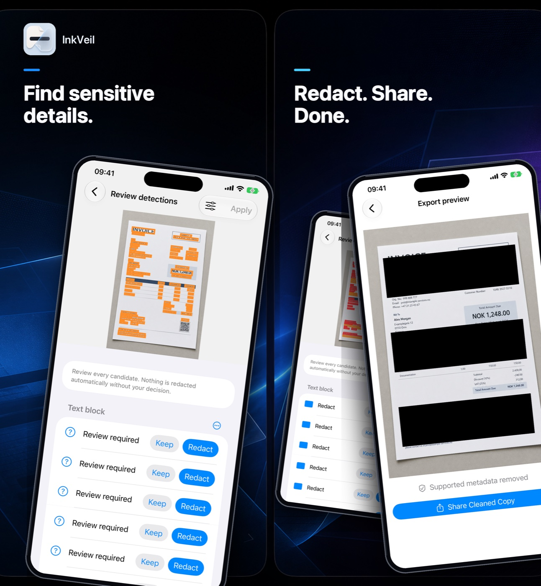
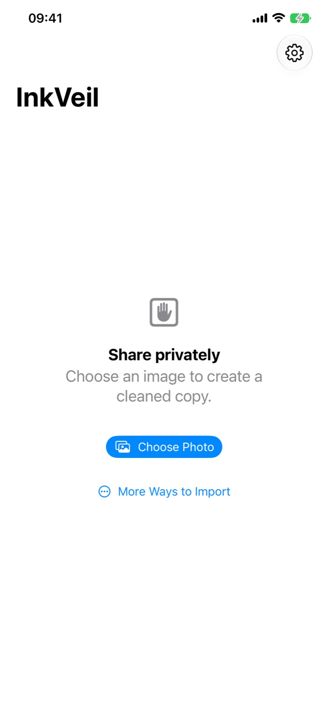
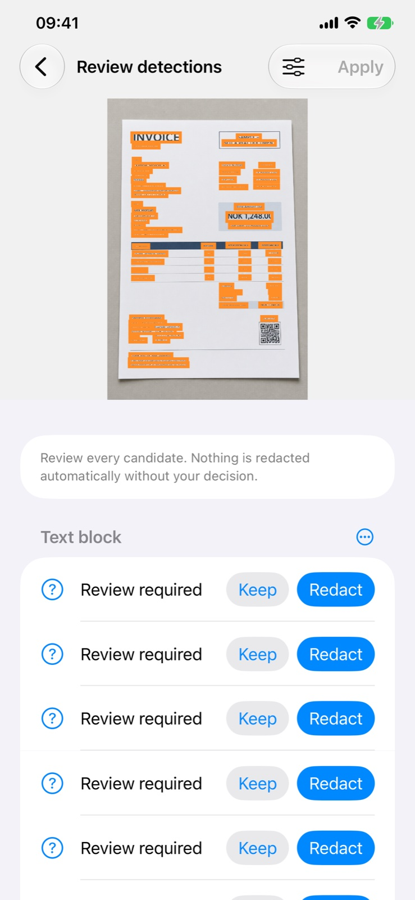
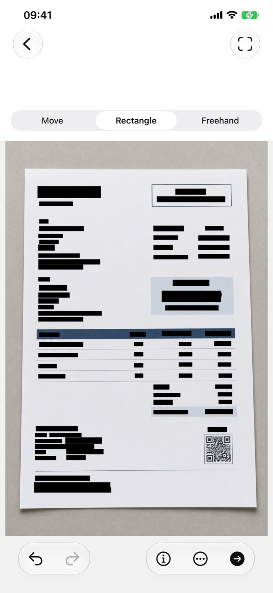
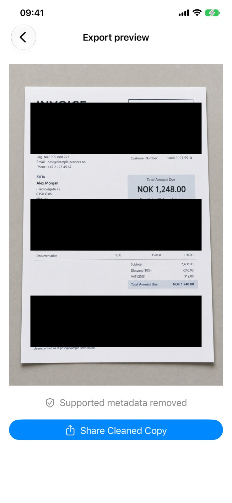

Permanent redaction
InkVeil creates a new cleaned image or rasterized PDF so redacted content cannot remain as an editable overlay or selectable text.
App information · iPhone
An iPhone app for permanently redacting sensitive information in selected images and PDF documents.

InkVeil creates a new cleaned image or rasterized PDF so redacted content cannot remain as an editable overlay or selectable text.
Images, documents, OCR output, detections, redactions, and metadata are processed on the iPhone. No developer-operated backend is used.
Optional Pro features use one non-consumable StoreKit purchase processed by Apple. There is no subscription.
Inside the app
Real screens from InkVeil, from the private start screen through detection review, permanent redaction, and secure export.



